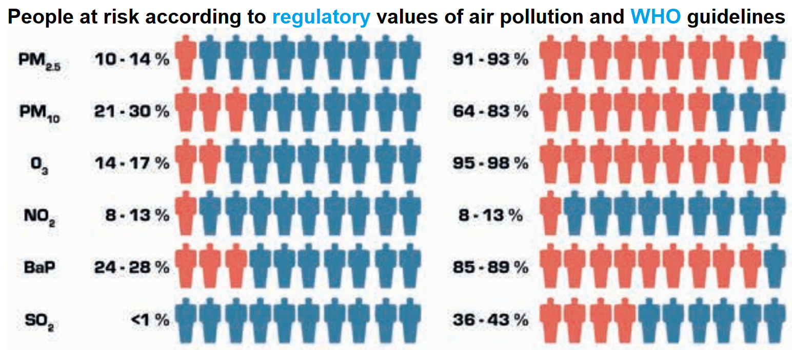

What is OpenData4Health?
OpenData4Health is a worldwide and endless hackathon to see how to reduce death and diseases based on open data.
Anyone can participate at any time. In simple terms:
- We do Y vs X where Y= mortality at fine granularity, X=good and bad "risk" factors
- When a probable link is found between X and Y then the link with health conditions is investigated
The project started in 2021 as a project of the International Longevity Alliance and Epidemium.
We encourage universities and institutions from every country to join - health must be improved everywhere. This is a serious project that can be part of studies related to public health, environment, graphics, communication, data science, data management, mathematics, statistics, actuarial sciences, public health, and much more. It is free data, there is no patent, anyone can contribute freely, put it on one's resume, and contribute to a better health.
Interestingly, we found that the epidemiologist Antoine Flahaut had expressed his desire for such a citizen-science project back in 2011!
How to join ?
OpenData4Health is related to another project launched in the framework of Epidemium: NEOS - described below - please do not hesitate to apply as well!
Essential achievements so far
Initiation
The project was initiated in 2015 by superimposing cancer risks and geographic factors worldwide at a large granularity level (country/state/region/department).
This proved that known factors for cancer risks could be found with this approach, and that finer geographic granularity was needed.
This is how in 2021 the project was continued but at small granularity, focusing on all-cause mortality for both an easier access to fine-granularity data and a larger scope in terms of health, and starting with France to make the project more amenable. One country is not enough however to grab the whole picture of what impacts health globally so the project needed to be extended. This is how OpenData4Health was born.
What follows is a snapshot of the project.
France
Mortality, when accounting by age and gender, is not homogeneous: [Pol Sans (Barcelona, Spain) and Edouard Debonneuil (Paris, France)]
Of note, the two lines of graphs are the same except that there is one dot per city or one dot per department/canton/city. The graphs on the right are even the same with different point sizes. This highlights the difficulty to visually appreciate nuances and the need to use mathematics (based on mixtures of binomial distributions) to refine the superposition between Y (mortality) and X (geographic factors) once visual analysis helps grossly chose X - just like with most database analyses.
We developped an interactive map at city level (slow to appear). The data on these maps average deaths and populations over 2014-2019, more granular statistics are being precisely collected by Oscar Garibo Orts (Valencia, Spain) for modeling.
Why is mortality low in Paris Bordeaux Lyon and high in Lille? Why is mortality high in the North of France?
Air pollution, water pollution, behaviors, wealth, access to healthcare...
Does a first look at maps of geographic factors in France provide potential clues?
Of note, this part will evolve as we focus on more factors
| Air pollution
would
be a key cause for mortality after alcohol and tobacco. PM2.5 - particulate matter with particles of aerodynamic diameter smaller than 2.5 µm - would lead to 9% of deaths.
The high concentration in the North half of France correlates with overmortality (even if it would suggest overmortality in Paris).
Let's look at neighboring countries:
Visually, the link is far from obvious, possibly due to confounding factors.
One would notably expect North of Belgium and North of Italy to have a low life expectancy.
|
| Alcool would cause caucer even at small doses.
|
| Smoking would be more prevalent at the borders of France.
See how a slightly different color, here gives the impression of a different map:
.
This shows the importance of knowing thresholds at which a substance is midly and strongly dangerous, and of finding fine granularity geographic data.
|
| Water pollution/soils. Arsenic, above 25 mg / kg or soil, would cause various diseases.
|
| Water pollution. Pesticides by city
|
- Access to healthcare:
- Alcohol, tobacco, obesity: [Adrien Helary (Paris, France)]
- Wealth:
- Other:
|
Of note, it may be useful also to decompose Y:
- Mortality by gender (mortality or here life expectancy)
Males:
Females:
- Cancer risks
They are being retrieved at canton level based on published cancer maps [Sylvain Sorrin (Bordeaux, France)]
- Other disease risks
They are being retrieved at department level (CépiDC website) [Ayesha Kawser (Toronto, Canada)]
Facing multiple possible explanations for mortality, it is good to rely on the scientific litterature and to use macro-data to adjust "Y=f(X)" rather than fully discover what X should be considered and how they should be considered (mean/max...).
A study that focused on fine particles versus mortality in France happens to be a good basis for OpenData4Health. We here go through various part of their report and synthesis while highlighting what serves the OpenData4Health more generally and we add comments in italics:
After
biological
aging,
Après le
vieillissement
biologique, |
 |
After biological aging processes, smoking would be the first cause of death (78,000 deaths in 2010), then alcohol, then air pollution (48,000 deaths in 2010)
This is according to Sante Public France, a respectful organization, but of course it depends on how causes are counted.
One may choose not to drink nor smoke, to some degree, but air pollution is imposed to us. This makes air pollution an interesting topic.
Of note, pointing at sources of overmortality shouldn't make us forget to also look at methods to improve health and overcome some aspects of biological aging. For example, regular physical activity, consumption of fruits and vegetables, adequate levels of vitamin C, vitamin D3 and zinc may improve the body and notably the immune system in various ways and help avoid numerous chronic diseases.
|
|  |
It is interesting to see that the regulatory and WHO thresholds for air pollutants are very different. We here focus on the latter as they are more strict.
Among air pollutants, europeans are mostly at risk from fine particles (PM2.5, and to a lesser extent PM10), ozone (O3) and benzo(a)pyrene (BaP, notably causes breast cancer).
Let us focus on PM2.5 and estimate the effect on mortality.
|
|
A complex model ('Gazel-Air') that mixes measures and chemistry transportation rules was developped by Aasqa in 2010-2012 to estimate annual PM2.5 concentration from 1989 to 2008 in squares of 2 km sides. The study interpolated them to have concentrations at city level in 2007-2008 (2006 was a special year due to a heat wave)
-all this data as well as the European data mentioned in the study may be very relevant for OpenData4Health!.
Of note, the correlation between PM observed in 1998-2008 and modeled by Gazel-Air is of 0.75 for PM10 but only 0.42 for PM2.5. An estimation of PM2.5 is 0.7xPM10.
|
| y2-y1=y1(ebeta (x2-x1) -1)
beta = ln(RR)/10 |
Then a model of mortality as a function of PM2.5 is used: RR=1.15 [1.05 : 1.25].
Concretely, if average PM2.5 moves from 20 to 10 µg/m3 in some area, the model expects mortality rates to be reduced by 13% (somewhere between 5% and 20%).
If PM2.5 moves from 10 to 20 µg/m3, mortality is expected to increase by 15% (between 5% and 25%)
In details, the study indicates that the WHO recommends to use a relative risk RR of 1.07 [1.04 : 1.09] from the 2014 meta-analysis of Hoek et. al. for an increase of 10 µg/m3.
However, a meta-analysis of more than 22 european studies including in France indicate this stronger impact on mortality.
|
|
They obtain such figures, and that overall 17,000 deaths could be avoided by reaching the WHO guidelines and up to 48,000 if no more PM2.5 was produced by humans.
|
|
In 2021, a study
performed a similar analysis on PM2.5 and NO2 following the first Covid-related confinement. Similarly to previous studies, it is estimated that
- PM2.5 accounts for about 7% of deaths
- NO2 accounts for about 1% of deaths
- overall, air pollution accounts for about 9% of deaths.
|
|
Back in 2017 already, this was leading to analysis of causes and action plans to monitor them and reduce risks. Impressive!
|
Is mortality risk linked with average PM2.5 concentration for the past 10 years? PM2.5 peaks 3 to 5 years earlier?
This "PM2.5" example (thin particulate matter in the air) shows how important it is to gather such knowledge to compare Y with the many potential risk factors X.
Luckily, the International Agency for Research on Cancer (IARC) investigates the link between cancers risks and various agents, and freely provides monographs that contain such knowledge.
The NEOS collaborative project gathers such knowledge for the use of each X and tries to define a standard for interoperable medical data that embbed such agents.
Please apply here for the NEOS project! The two projects are very linked as you can see.
NEOS project, with Pascal Deschaseaux (Lyon, France), Sébastien de Longeaux (Lyon, France), Rachel Aronoff (Lausanne, Switzerland), Edouard Debonneuil (Paris, France) and others
How to model Y=f(X)
As seen above, our eyes do not know use to use micro-data: to see red or green parts of France, mortality had to be aggregated over time and space. Models know however.
Also, many factors X can grossly explain why mortality is particular in some parts of France - models can disentangle risk factors more precisely than our eyes.
It is important for models to be well guided with the right appreciation of uncertainty for each data. Then, simple models such as a logistic regression can be used, or strong machine learning models with shap values and/or ACV to show the main risk explanations that the model found for each city [Adrien Helary (Paris, France)]
Germany
Some data was prepared for 2022
USA
Some data was prepared for 2022